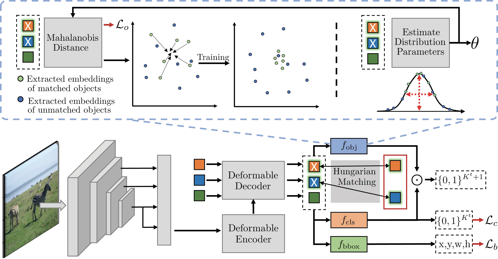
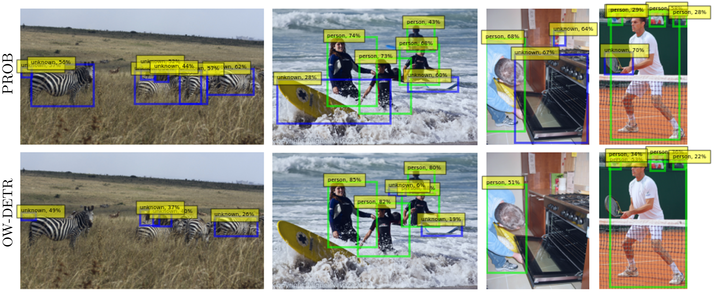
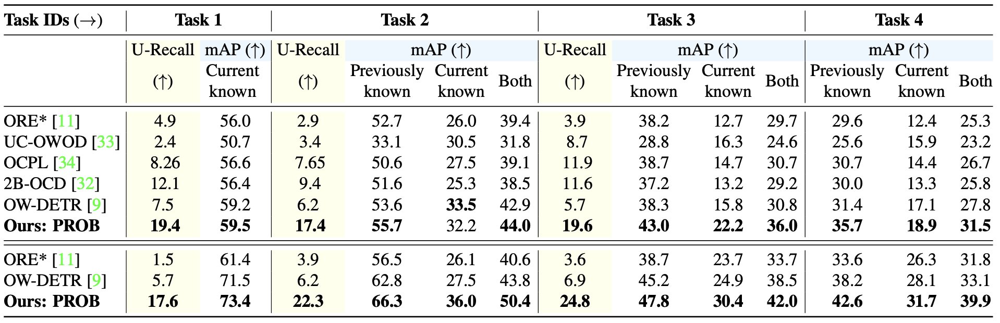

Open World Object Detection (OWOD) is a new and challenging computer vision task that bridges the gap between classic object detection (OD) benchmarks and object detection in the real world. In addition to detecting and classifying seen/labeled objects, OWOD algorithms are expected to detect novel/unknown objects - which can be classified and incrementally learned.
In standard OD, object proposals not overlapping with a labeled object are automatically classified as background. Therefore, simply applying OD methods to OWOD fails as unknown objects would be predicted as background. The challenge of detecting unknown objects stems from the lack of supervision in distinguishing unknown objects and background object proposals. Previous OWOD methods have attempted to overcome this issue by generating supervision using pseudo-labeling - however, unknown object detection has remained low. Probabilistic/generative models may provide a solution for this challenge.
Herein, we introduce a novel probabilistic framework for objectness estimation, where we alternate between probability distribution estimation and objectness likelihood maximization of known objects in the embedded feature space - ultimately allowing us to estimate the objectness probability of different proposals. The resulting Probabilistic Objectness transformer-based open-world detector, PROB, integrates our framework into traditional object detection models, adapting them for the open-world setting. Comprehensive experiments on OWOD benchmarks show that PROB outperforms all existing OWOD methods in both unknown object detection (~2x unknown recall) and known object detection (~10% mAP).
PROB adapts the Deformable DETR model by adding the proposed ‘probabilistic objectness’ head. In training, we alternate between distribution estimation (top right) and objectness likelihood maximization of matched ground-truth objects (top left). For inference, the objectness probability multiplies the classification probabilities. For more, see the manuscript.

Qualitative results on example images from MS-COCO test set. Detections of PROB (top row) and OW-DETR (bottom row) are displayed, with green - known and blue - unknown object detections. Across all examples, PROB detected more unknown objects than OW-DETR, for example, tennis racket in the right column and zebras in the left column. Interestingly, when OW-DETR does detect unknown objects, the predictions have very low confidence, e.g., the surfing board in the center-left column.

State-of-the-art comparison for Open World Object Detection on M-OWODB (top) and S-OWODB (bottom). The comparison is shown in terms of unknown class recall (U-Recall) and known class mAP@0.5 (for previously, currently, and all known objects). PROB outperforms all existing OWOD models across all tasks both in terms of U-Recall and known mAP, indicating our models improved unknown and known detection capabilities. The smaller drops in mAP between ‘Previously known’ and ‘Current known’ from the previous task exemplify that the exemplar selection improved our models’ incremental learning performance. Note that since all 80 classes are known in Task 4, U-Recall is not computed. Only ORE and OW-DETR are compared in S-OWODB, as other methods have not reported results on this benchmark. See our paper for more details.

@inproceedings{Zohar_2023_CVPR,
title = {PROB: Probabilistic Objectness for Open World Object Detection},
author = {Zohar, Orr and Wang, Kuan-Chieh and Yeung, Serena},
booktitle = {Proceedings of the IEEE/CVF Conference on Computer Vision and Pattern Recognition (CVPR)},
month = jun,
year = {2023},
pages = {11444-11453}
}